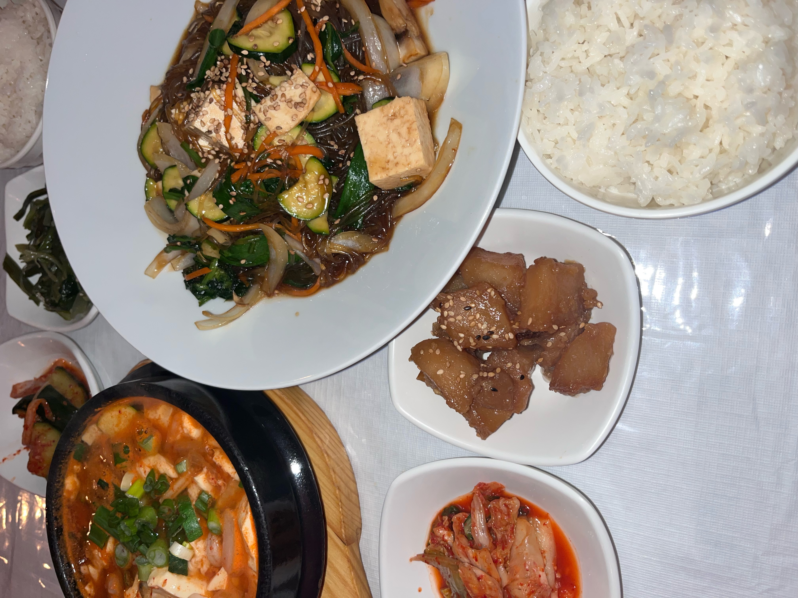
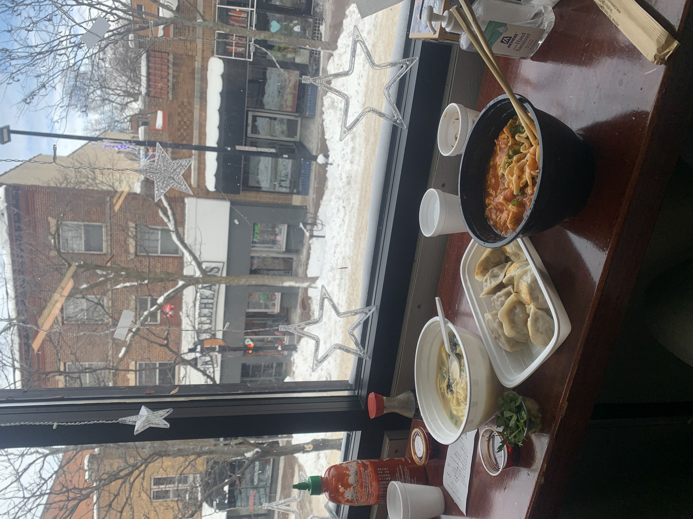
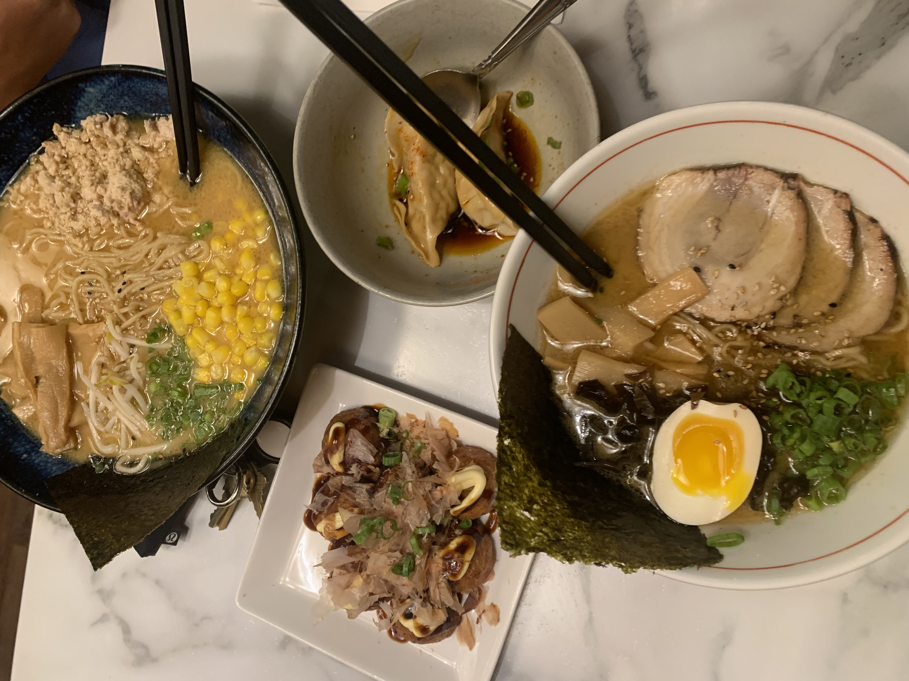
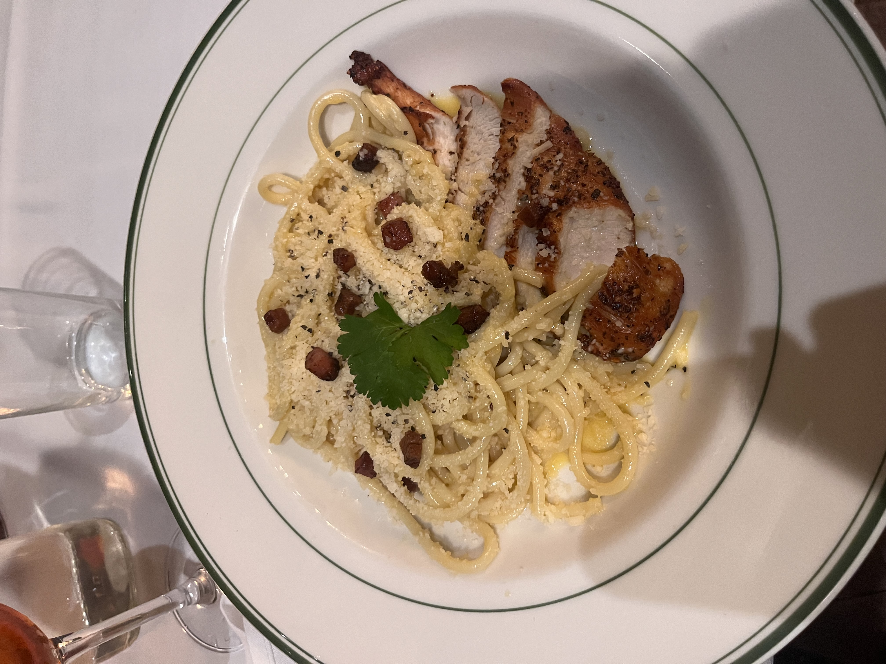

Adeline's Journey as a Foodie
Home Page
Madison, WI
Portland, OR
Seattle, WA
City: Madison, WI
Korean Cuisine
Chinese Cuisine
Japanese Cuisine
Italian Cuisine
1. Sol's on the Square

2. Chen's Dumpling Restaurant

3. Strings Ramen

4. d'vino
